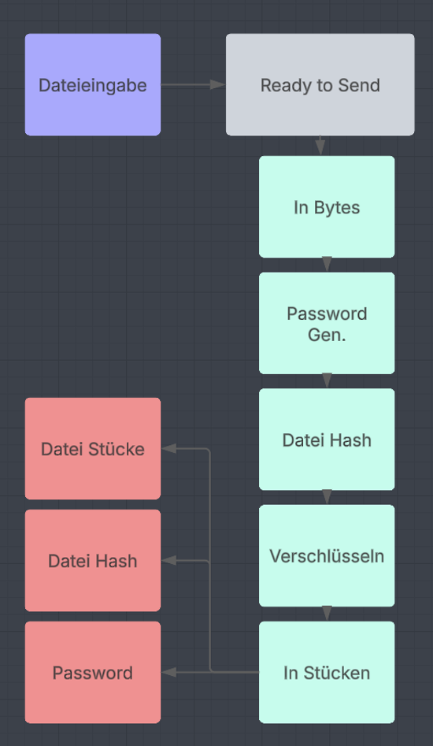
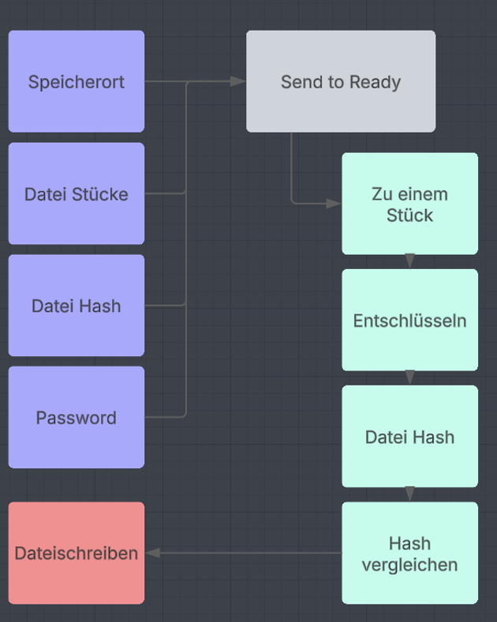
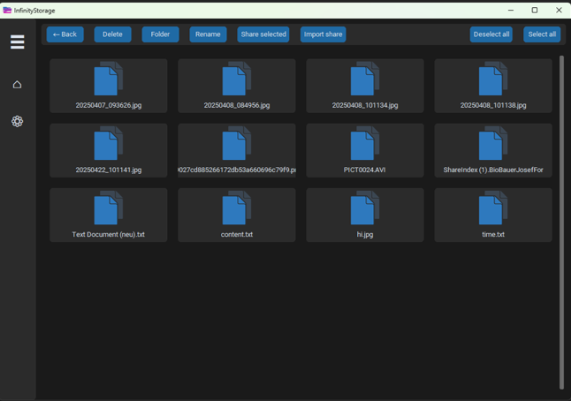

InfinityStorage ist ein Schulprojekt in Python – eine Desktop-Anwendung, die Discord-Webhooks als
kostenlosen, unbegrenzten Cloud-Speicher nutzt. Dateien werden verschlüsselt, in Stücke aufgeteilt
und als Anhänge über Discord-Webhooks hochgeladen. Zum Abrufen werden die Stücke wieder zusammengesetzt
und entschlüsselt. Die GUI wurde mit
CustomTkinter gebaut,
die Metadaten in einer
SQLite-Datenbank verwaltet.
01 Die Idee
Cloud-Speicher kostet Geld – aber Discord-Server sind kostenlos und haben kein Speicherlimit für Anhänge. Die Idee war einfach: Discord als Backend missbrauchen. Dateien werden per Webhook hochgeladen und die Attachment-URLs in einer lokalen Datenbank gespeichert. Damit lässt sich jede beliebige Datei sichern und später wieder abrufen, ohne einen einzigen Server zu betreiben.
02 Upload – Verschlüsseln & Verteilen
Beim Upload durchläuft jede Datei eine feste Pipeline: Zuerst wird ein zufälliges Passwort generiert
und die Datei mit
pyAesCrypt (AES-256) verschlüsselt.
Dann wird ein SHA-512-Hash der Originaldatei berechnet, um die Integrität später prüfen zu können.
Anschließend wird die verschlüsselte Datei in mehrere Stücke (Chunks) aufgeteilt,
denen zufällige Fake-Namen gegeben werden, und über mehrere Discord-Webhooks verteilt.
Passwort, Hash und die Webhook-URLs der Stücke landen in der lokalen SQLite-Datenbank.

03 Download – Zusammensetzen & Prüfen
Beim Download werden alle Stücke anhand der gespeicherten URLs von Discord geladen und in der richtigen Reihenfolge zu einer Datei zusammengesetzt. Danach wird die Datei entschlüsselt und der SHA-512-Hash verglichen – stimmt er nicht, wird die Datei verworfen. Nur wenn alles passt, wird die Datei an den Zielpfad geschrieben.

04 GUI & Architektur
Die Oberfläche wurde mit
CustomTkinter gebaut –
ein modernes Tkinter-Framework mit dunklem Design. Die Anwendung läuft multi-threaded: Ein Haupt-Worker
erledigt Upload/Download-Operationen, ein zweiter verwaltet die Datenbankzugriffe, und ein dritter
kümmert sich um GUI und System-Tray-Icon (via
pystray).
Alle Komponenten kommunizieren über Thread-sichere Queues.

05 Anonymität via Tor
Alle Uploads und Downloads laufen optional über das
Tor-Netzwerk (via
torpy).
Das bedeutet: Kein Discord-Server sieht die echte IP-Adresse des Nutzers.
Zusätzlich bekommen alle hochgeladenen Chunks zufällige Fake-Namen (generiert mit
Faker) und werden in zufälliger
Größe verschickt – so lässt sich aus dem Traffic-Muster allein nicht ableiten, was übertragen wurde.
06 File Sharing
Dateien können als verschlüsselte Share-Pakete exportiert und an andere Nutzer weitergegeben werden. Das Paket enthält alle nötigen Metadaten – Chunk-URLs, Passwort und Hash – in verschlüsselter Form. Der Empfänger importiert das Paket in seine eigene Instanz und kann die Datei von Discord herunterladen, ohne selbst Zugang zu den Webhooks des Senders zu brauchen.
07 Demo
08 Fazit
InfinityStorage hat gezeigt, wie man mit einfachen Mitteln – Python, Discord und etwas Kryptographie – ein vollständiges Desktop-Programm baut. Das Projekt kombiniert Threading, Queue-basierte Architektur, Datenbankzugriffe, Netzwerkanonymisierung und GUI-Entwicklung in einem realen Kontext. Ein Schulprojekt, das mehr geworden ist als geplant.